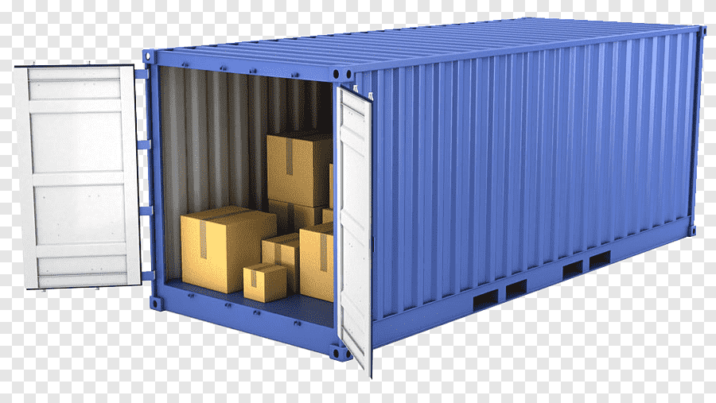
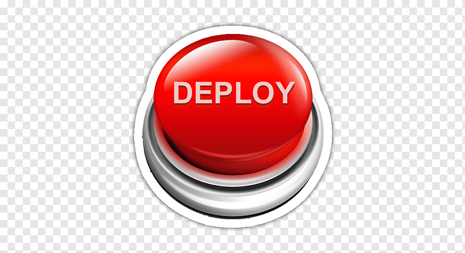
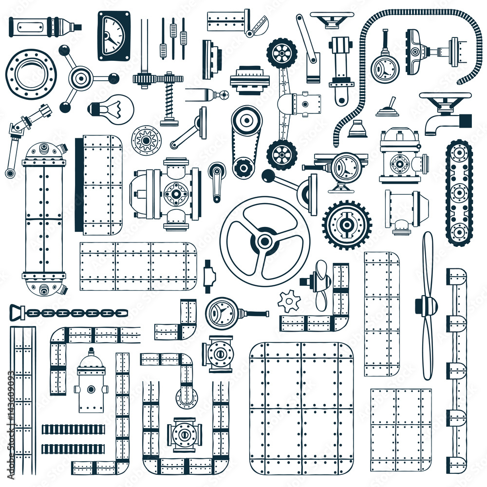
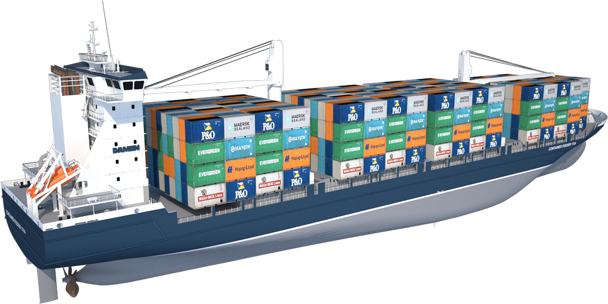

Presentación para Lenguaje Científico II
Asunción - 2022
Desarrollar tu aplicación y sus componentes usando contenedores

El contenedor se convierte en la unidad para distribuir y testear tu aplicación
Cuando estés listo, despliega tu aplicación dentro de un entorno de producción, como un contenedor o un servicio orquestado. Funciona de la misma manera si tu entorno de producción es centro local de datos, un proveedor en la nube, o un híbrido de ambos
¿Por qué existe Docker?
 La arquitectura de Docker

¡Vamos a picar código!
Requisitos
- El prototipo o código fuente
- El fichero Dockerfile